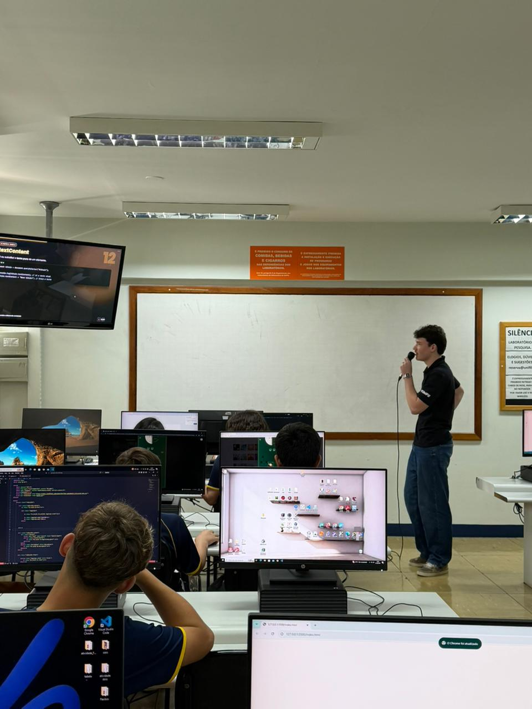

Relatório – 22ª Aula
Data: 01/09/2026
Turma: 8º e 9º ano
Instrutor: Thiago Varoni
Relatório – JavaScript
Hoje tive a oportunidade de conduzir a 22ª aula do curso Londrinense Tech, focada em JavaScript. A aula começou com uma breve revisão dos conceitos abordados na aula anterior, garantindo que todos os alunos estivessem confortáveis com o material antes de avançarmos para tópicos mais complexos. Seguimos a aula explorando a manipulação do DOM e apresentei para os alunos sobre classList, createElement, appendChild e removeChild. Para tornar a aula mais interativa, criei uma lista de tarefas, junto com os alunos, onde eles poderiam adicionar e remover itens dinamicamente. Durante a atividade, circulei pela sala para oferecer suporte individualizado, esclarecendo dúvidas e ajudando com problemas de sintaxe.
Após esse momento avançamos para a criação de um botâo que, ao ser clicado, alterava a cor de fundo da lista, demonstrando a capacidade do JavaScript de interagir com o CSS. Infelizmente, fiz o botão um pouco rapido de mais e muitos alunos não conseguiram acompanhar, então muitos códigos ficaram com erros, fui caminhando pela sala para ajudar a corrigir os erros e garantir que todos conseguissem ver o efeito funcionando. Alguns códigos não ficaram completos, e por conta do tempo, pedi para guardarem os códigos para a próxima aula, onde iremos finalizar a atividade e revisar os conceitos aprendidos.
